SCUT-onHCCTestDB TradChar subset 1 — SCUT-COUCH2009 Big5와는 별도 데이터셋입니다. 최신 CNN 대신 공개 학습 모델을 포함한 이전 버전을 사용했습니다.
| 모델 | Top-1 | Top-5 | 오류 | 중앙시간 |
|---|---|---|---|---|
| Hanzi Lookup | 35% | 49% | 1 | 1.2ms |
| Zinnia | 23% | 29% | 0 | 15.6ms |
| cnn_chinese_hw (legacy) | 38% | 51% | 0 | 6.3ms |
| GlyphWeave | 95% | 100% | 0 | 87.5ms |
평가 조건·제한 사항 · 결과 CSV · 100자 한눈에 보기
| 번호 / 정답 / 실제 필기 | Hanzi Lookup | Zinnia | cnn_chinese_hw (legacy) | GlyphWeave |
|---|---|---|---|---|
| 1 · 划 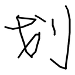 | 氶 队 犯 邓 孔 오답 | 俇 佫 刈 仈 孔 오답 | 恿 晲 愿 暾 焄 오답 | 划 圳 妙 扪 戈 Top-1 정답 |
| 2 · 虫 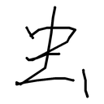 | 玄 讪 发 冎 亢 오답 | 化 防 各 逭 云 오답 | 漯 虫 出 埭 球 Top-5 정답 | 虫 忠 电 由 击 Top-1 정답 |
| 3 · 丁 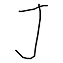 | 丁 厂 寸 刂 冂 Top-1 정답 | 丁 几 獫 狚 狪 Top-1 정답 | 丿 了 疹 还 跤 오답 | 丁 寸 J 厂 十 Top-1 정답 |
| 4 · 入 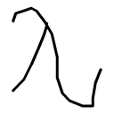 | 几 九 儿 乇 凡 오답 | 几 狠 狂 獙 狙 오답 | 克 厄 尾 藿 湸 오답 | 入 乙 几 又 刀 Top-1 정답 |
| 5 · 刀 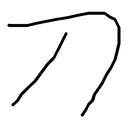 | 刀 卩 力 才 艹 Top-1 정답 | 乃 与 日 及 忍 오답 | 刃 刀 尸 騕 矛 Top-5 정답 | 刀 刁 丌 乃 入 Top-1 정답 |
| 6 · 匕 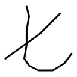 | 屮 丩 千 凵 冂 오답 | 匕 九 且 力 頄 Top-1 정답 | 匕 迄 牝 辺 也 Top-1 정답 | 七 匕 乂 乜 X Top-5 정답 |
| 7 · 丸 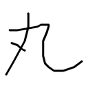 | 飞 卂 书 瓦 互 오답 | 九 士 刃 寸 囗 오답 | 九 攴 夊 也 板 오답 | 丸 九 凡 扎 纨 Top-1 정답 |
| 8 · 五 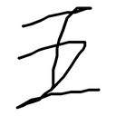 | 马 丂 卫 弓 巳 오답 | 乃 孑 几 孓 乜 오답 | 2 了 墁 壱 墬 오답 | 五 互 乏 支 王 Top-1 정답 |
| 9 · 亢 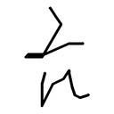 | 幺 弓 亿 乞 马 오답 | 乙 姑 抃 凍 姨 오답 | 矂 甏 髢 蟟 洨 오답 | 亢 瓦 芪 庇 瓮 Top-1 정답 |
| 10 · 仆 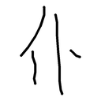 | 仆 犬 灬 爪 川 Top-1 정답 | 仆 壬 仁 川 陜 Top-1 정답 | 仆 介 仈 卯 价 Top-1 정답 | 仆 什 外 介 爪 Top-1 정답 |
| 11 · 切 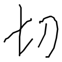 | 切 邛 瓦 邓 厉 Top-1 정답 | 切 弔 伋 仇 歹 Top-1 정답 | 扔 沒 吻 忉 疡 오답 | 切 沏 均 场 圾 Top-1 정답 |
| 12 · 升 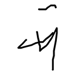 | 弓 弔 历 巿 牙 오답 | 干 弓 西 台 屮 오답 | ろ へ 諦 緙 廓 오답 | 升 开 母 乡 可 Top-1 정답 |
| 13 · 夫 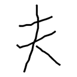 | 夬 支 尺 友 圤 오답 | 干 夫 井 屆 囚 Top-5 정답 | 夫 丰 尭 王 夹 Top-1 정답 | 夫 夬 天 大 失 Top-1 정답 |
| 14 · 斤 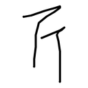 | 飞 乃 马 阝 丂 오답 | 又 人 旴 因 名 오답 | 了 犀 つ 屌 雩 오답 | 斤 厅 芹 折 片 Top-1 정답 |
| 15 · 乩 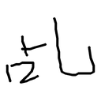 | 乩 叽 讬 叱 吒 Top-1 정답 | 此 札 矢 叭 帥 오답 | 淀 鳦 况 定 淑 오답 | 乩 乱 卢 占 扎 Top-1 정답 |
| 16 · 位 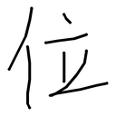 | 位 忙 兄 住 后 Top-1 정답 | 隹 位 仁 收 圩 Top-5 정답 | 庉 漧 蔻 嚙 獦 오답 | 位 拉 立 垃 俭 Top-1 정답 |
| 17 · 吝 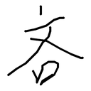 | 龙 存 尥 襾 驭 오답 | 本 庂 弚 艽 仡 오답 | 褅 诱 丐 谛 疙 오답 | 吝 各 客 杏 吞 Top-1 정답 |
| 18 · 吹 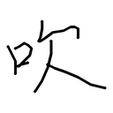 | 吃 邡 丝 吸 收 오답 | 狃 各 狳 陂 帆 오답 | 吹 哝 快 哏 哎 Top-1 정답 | 吹 砍 呗 吮 欠 Top-1 정답 |
| 19 · 吮 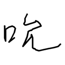 | 亾 오답 | 八 几 訄 之 夙 오답 | 壁 2 砣 硠 起 오답 | 吮 唉 咣 嗞 哞 Top-1 정답 |
| 20 · 希 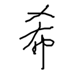 | 氖 邬 邠 厽 邨 오답 | 弁 兄 仚 矢 仝 오답 | 莠 鞥 蓆 蒡 箏 오답 | 希 肴 郗 莽 斋 Top-1 정답 |
| 21 · 庇 | 讥 奶 讫 扔 饥 오답 | 庀 气 奶 卞 汩 오답 | 一 褅 ん 鹧 効 오답 | 庇 底 庖 庼 麻 Top-1 정답 |
| 22 · 弄 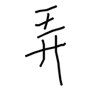 | 弄 芙 层 吴 运 Top-1 정답 | 弄 汧 芽 芸 芙 Top-1 정답 | 弄 幸 孑 铆 痱 Top-1 정답 | 弄 卉 奔 幸 青 Top-1 정답 |
| 23 · 扭 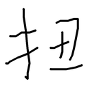 | 圮 抠 坑 圯 证 오답 | 扭 垏 掃 匣 戌 Top-1 정답 | 扭 扫 抱 資 賁 Top-1 정답 | 扭 杻 扫 扣 狃 Top-1 정답 |
| 24 · 汰 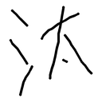 | 汰 汊 沐 泔 坏 Top-1 정답 | 坏 決 汰 吜 溝 Top-5 정답 | 汰 沐 达 珔 汝 Top-1 정답 | 汰 浕 呔 太 泜 Top-1 정답 |
| 25 · 肚 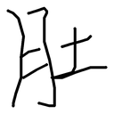 | 纣 纽 纪 闯 约 오답 | 肚 用 孜 圩 胂 Top-1 정답 | 銮 胺 豗 廏 零 오답 | 肚 肛 牡 胜 壮 Top-1 정답 |
| 26 · 走 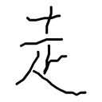 | 走 圪 忌 匣 扢 Top-1 정답 | 交 吉 芝 呂 尖 오답 | 尭 走 赱 蔟 敖 Top-5 정답 | 走 徒 起 壶 疋 Top-1 정답 |
| 27 · 供 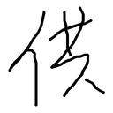 | 吗 妈 妁 吆 讪 오답 | 姶 俇 戉 兆 姐 오답 | 域 峡 性 怅 娘 오답 | 供 拱 侥 洪 借 Top-1 정답 |
| 28 · 券 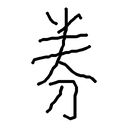 | 劵 券 桊 卷 氛 Top-5 정답 | 券 苓 翕 季 蔟 Top-1 정답 | 券 椦 考 殤 诱 Top-1 정답 | 券 誊 拳 桊 眷 Top-1 정답 |
| 29 · 夜 | 夜 衩 初 庙 祁 Top-1 정답 | 庈 极 卣 秞 規 오답 | 庚 庆 庄 庙 痍 오답 | 夜 莜 放 疚 液 Top-1 정답 |
| 30 · 姑 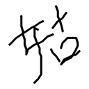 | 坞 抛 鸡 鸠 抱 오답 | 杚 刉 滊 級 嫴 오답 | 魌 婽 諾 轔 虫 오답 | 轱 牯 姑 聒 粘 Top-5 정답 |
| 31 · 拌 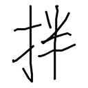 | 抻 抵 拐 拌 抑 Top-5 정답 | 抖 找 西 匣 杅 오답 | 拌 料 抖 掸 捶 Top-1 정답 | 拌 伴 挡 柈 捎 Top-1 정답 |
| 32 · 服 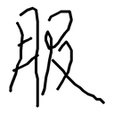 | 服 股 练 报 呜 Top-1 정답 | 极 昅 日 瞗 乂 오답 | 舨 楩 服 遯 版 Top-5 정답 | 服 股 腹 报 胶 Top-1 정답 |
| 33 · 沫 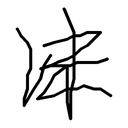 | 幻 冗 亢 乌 匹 오답 | 乇 己 乙 乞 勺 오답 | 襻 瀝 讓 る 乙 오답 | 漆 沫 涞 涤 冻 Top-5 정답 |
| 34 · 沿 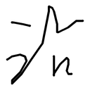 | 讥 仍 厹 阞 幻 오답 | 朵 乇 阞 殳 亍 오답 | 湇 譜 甏 沆 法 오답 | 沾 沿 治 冶 站 Top-5 정답 |
| 35 · 炒 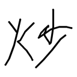 | 弘 仰 饥 仡 机 오답 | 妅 怡 仩 叫 本 오답 | 銬 汫 妝 狭 进 오답 | 炒 妙 灿 纱 沙 Top-1 정답 |
| 36 · 盂 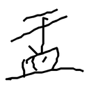 | 盂 盏 盈 匧 盎 Top-1 정답 | 盂 示 峉 苴 罞 Top-1 정답 | 盂 孰 肌 菰 甄 Top-1 정답 | 盂 盉 孟 盘 盖 Top-1 정답 |
| 37 · 祀 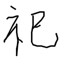 | 夗 讥 包 犯 丝 오답 | 厄 狣 氿 猳 逗 오답 | 舥 匜 靶 浪 誙 오답 | 祀 矩 杞 耙 犯 Top-1 정답 |
| 38 · 肪 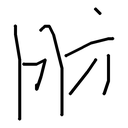 | 财 町 昉 咔 吩 오답 | 吥 犿 吘 囷 呅 오답 | 肪 可 防 脐 忻 Top-1 정답 | 肪 舫 肠 肮 肋 Top-1 정답 |
| 39 · 勇 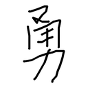 | 勇 势 贽 垫 通 Top-1 정답 | 泠 岭 更 協 彾 오답 | 勇 葶 舅 寧 峒 Top-1 정답 | 勇 剪 甬 舅 劈 Top-1 정답 |
| 40 · 娃 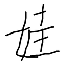 | 娃 姪 眭 哇 诖 Top-1 정답 | 娃 山 姪 小 垔 Top-1 정답 | 娃 姥 娘 匿 民 Top-1 정답 | 娃 姓 蛙 诖 婞 Top-1 정답 |
| 41 · 姚 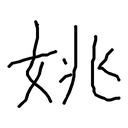 | 侗 姚 俄 瓯 姒 Top-5 정답 | 姚 姶 熥 卹 嬬 Top-1 정답 | 愀 姚 娳 嫒 楸 Top-5 정답 | 姚 挑 桃 珧 绯 Top-1 정답 |
| 42 · 孩 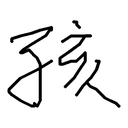 | 级 邬 设 饧 约 오답 | 乙 弘 以 玄 加 오답 | 陔 圧 恿 厧 亙 오답 | 孩 骇 较 狡 核 Top-1 정답 |
| 43 · 帝 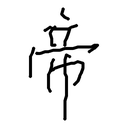 | 谛 婦 帶 㣎 钸 오답 | 帝 俑 盄 胛 焄 Top-1 정답 | 帝 蒂 棉 席 蔕 Top-1 정답 | 帝 帚 席 带 蒂 Top-1 정답 |
| 44 · 按 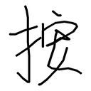 | 扬 抢 批 扼 抛 오답 | 巧 挾 圴 拘 找 오답 | 粳 粮 按 迤 悔 Top-5 정답 | 按 桉 拨 挖 胺 Top-1 정답 |
| 45 · 拼 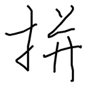 | 拐 拗 拚 拧 抑 오답 | 抬 乜 抄 孔 佫 오답 | 拚 絲 犐 鱕 轹 오답 | 拼 栟 拚 摒 描 Top-1 정답 |
| 46 · 拽 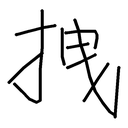 | 拽 拐 捭 捍 拗 Top-1 정답 | 拽 祗 捐 拷 持 Top-1 정답 | 拽 洗 誥 挖 蹲 Top-1 정답 | 拽 曳 按 抻 搜 Top-1 정답 |
| 47 · 炫 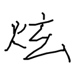 | 舷 幽 弦 炫 铉 Top-5 정답 | 玹 炫 玗 觓 舢 Top-5 정답 | 炫 絃 眩 樒 呟 Top-1 정답 | 炫 恼 赅 燃 烂 Top-1 정답 |
| 48 · 炬 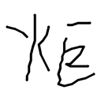 | 佃 兆 杩 陉 彻 오답 | 姖 奼 朼 侮 俺 오답 | 怩 熔 澑 呖 尷 오답 | 炬 柜 矩 讵 拒 Top-1 정답 |
| 49 · 皆 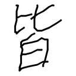 | 眢 皆 指 背 㲋 Top-5 정답 | 治 沓 岊 昋 炎 오답 | 皆 峇 铛 借 喑 Top-1 정답 | 皆 昏 蒈 喈 毕 Top-1 정답 |
| 50 · 眇 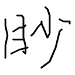 | 眇 胁 眙 盼 肿 Top-1 정답 | 甽 昑 眙 睮 明 오답 | 眇 亚 跎 渺 眈 Top-1 정답 | 眇 钞 渺 盼 抄 Top-1 정답 |
| 51 · 胝 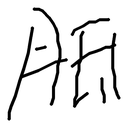 | 晒 昀 胨 胭 昭 오답 | 狳 脈 暕 力 倧 오답 | 肽 肘 媽 胨 胝 Top-5 정답 | 胝 胍 胴 胭 抵 Top-1 정답 |
| 52 · 郎 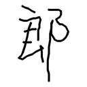 | 邬 邮 即 邰 邨 오답 | 曳 祁 勖 邢 盟 오답 | 鄯 鄞 遷 る 瞢 오답 | 郎 即 朗 郡 刨 Top-1 정답 |
| 53 · 首 | 首 眉 盾 省 宜 Top-1 정답 | 首 相 珇 看 垚 Top-1 정답 | 者 首 督 枸 晢 Top-5 정답 | 首 着 酋 眷 肴 Top-1 정답 |
| 54 · 剜 | 兹 茲 約 剜 細 Top-5 정답 | 帥 酮 禹 亮 敆 오답 | 溶 涮 蓉 帰 窌 오답 | 剜 宛 剡 剟 厕 Top-1 정답 |
| 55 · 哨 | 纨 级 纪 饩 约 오답 | 甩 州 伕 呔 牝 오답 | 咣 嫳 呓 忔 橶 오답 | 哨 啃 喘 蛸 硝 Top-1 정답 |
| 56 · 疽 | 疽 疸 谊 组 祖 Top-1 정답 | 疸 租 卞 庫 砠 오답 | 疸 蔸 珀 疽 膛 Top-5 정답 | 疽 疸 瘟 痘 植 Top-1 정답 |
| 57 · 耕 | 耕 耘 奏 耙 耗 Top-1 정답 | 耕 師 鉬 湆 紋 Top-1 정답 | 耕 趔 寳 褻 竞 Top-1 정답 | 耕 耘 耙 耩 耢 Top-1 정답 |
| 58 · 荃 | 荃 苣 荟 莒 荅 Top-1 정답 | 荃 砭 皇 柱 荅 Top-1 정답 | 荃 瑾 堇 革 莖 Top-1 정답 | 荃 荼 荟 基 芩 Top-1 정답 |
| 59 · 豹 | 豹 豺 約 紈 敝 Top-1 정답 | 貂 侖 烑 約 瓴 오답 | 豹 貂 勿 煸 劣 Top-1 정답 | 豹 豺 貉 貊 豸 Top-1 정답 |
| 60 · 崖 | 崖 壹 馆 绾 滻 Top-1 정답 | 棄 嵀 軴 尋 貧 오답 | 差 爰 关 淫 恙 오답 | 崖 崔 宦 崇 堂 Top-1 정답 |
| 61 · 庵 | 鹿 庵 亮 谄 疵 Top-5 정답 | 屍 卞 庫 展 袉 오답 | 庵 谥 摮 厳 旙 Top-1 정답 | 庵 魇 阉 俺 罨 Top-1 정답 |
| 62 · 徜 | 熵 徜 噬 谒 嘀 Top-5 정답 | 徜 須 楠 綑 裲 Top-1 정답 | 徜 侖 倘 彻 淌 Top-1 정답 | 徜 徊 倘 绱 祠 Top-1 정답 |
| 63 · 悼 | 焯 悼 倬 棹 惮 Top-5 정답 | 悼 什 佯 釬 俏 Top-1 정답 | 悼 焯 鱒 倬 闸 Top-1 정답 | 悼 焯 掉 棹 卓 Top-1 정답 |
| 64 · 惕 | 赐 埸 喝 媧 惕 Top-5 정답 | 們 陓 恀 悍 惀 오답 | 惕 筋 る 偊 它 Top-1 정답 | 惕 愣 愠 慢 赐 Top-1 정답 |
| 65 · 敏 | 敏 缄 能 兟 筢 Top-1 정답 | 敏 莛 毓 敢 涎 Top-1 정답 | 敏 觚 毓 窯 觥 Top-1 정답 | 敏 舨 繁 每 般 Top-1 정답 |
| 66 · 曹 | 曹 暂 匮 富 谓 Top-1 정답 | 曹 夏 瓷 害 紘 Top-1 정답 | る 槽 葛 膊 曹 Top-5 정답 | 曹 瞢 漕 遭 嘈 Top-1 정답 |
| 67 · 涎 | 邬 吼 弛 呜 巠 오답 | 毽 汕 矢 佤 坋 오답 | 堰 圯 鍵 此 乙 오답 | 涎 诞 涵 漩 蜒 Top-1 정답 |
| 68 · 烯 | 惙 稀 焓 烯 叕 Top-5 정답 | 悕 狶 師 囟 修 오답 | 烯 嶙 蟒 嗾 烆 Top-1 정답 | 烯 炼 豨 崤 唏 Top-1 정답 |
| 69 · 瓠 | 铆 钨 铅 骊 鸫 오답 | 怏 恥 盳 砏 眨 오답 | 挛 鄴 要 嚼 鹳 오답 | 瓠 刳 欹 巯 瓤 Top-1 정답 |
| 70 · 莽 | 莽 荬 莫 荨 惹 Top-1 정답 | 莽 師 莢 苤 紡 Top-1 정답 | 槔 莽 蓉 萃 犀 Top-5 정답 | 莽 奔 苯 荞 漭 Top-1 정답 |
| 71 · 寓 | 寓 嵩 暠 處 嗚 Top-1 정답 | 棗 甯 向 禹 黹 오답 | 寓 禺 舫 碼 宮 Top-1 정답 | 寓 宴 寅 冥 窠 Top-1 정답 |
| 72 · 悲 | 悲 砦 晗 啞 嗒 Top-1 정답 | 夏 毣 痁 歭 珞 오답 | 珸 疸 汽 懖 挎 오답 | 悲 韭 裴 蜚 斐 Top-1 정답 |
| 73 · 掌 | 掌 鲎 筝 當 萼 Top-1 정답 | 嘗 于 掌 割 甯 Top-5 정답 | 掌 鸿 挙 裨 婆 Top-1 정답 | 掌 堂 裳 牚 棠 Top-1 정답 |
| 74 · 揉 | 鸠 鸡 呜 凫 肠 오답 | 乙 多 八 弚 殳 오답 | 隰 曝 暰 陔 险 오답 | 揉 搡 操 猱 糅 Top-1 정답 |
| 75 · 湮 | 湮 堙 嘌 溧 摽 Top-1 정답 | 湊 徨 湮 軴 揀 Top-5 정답 | 堙 湮 恶 泛 慁 Top-5 정답 | 湮 淫 茳 涅 堙 Top-1 정답 |
| 76 · 渴 | 凫 纰 鸠 岛 呜 오답 | 乜 心 屯 匢 氙 오답 | 割 溘 清 當 首 오답 | 渴 漹 蔼 谒 褐 Top-1 정답 |
| 77 · 皓 | 肠 纾 纰 饧 纥 오답 | 岶 訄 頄 姶 阭 오답 | 続 蹄 嵞 睆 蠹 오답 | 皓 鲒 酷 睃 锆 Top-1 정답 |
| 78 · 短 | 短 崞 矬 铵 姬 Top-1 정답 | 秣 殺 蚖 袕 矯 오답 | 筅 伅 秺 谾 箬 오답 | 短 矩 知 矮 雉 Top-1 정답 |
| 79 · 筋 | 湔 筋 剮 淥 剐 Top-5 정답 | 能 莇 晶 剟 兗 오답 | 筋 諔 浾 窷 鵔 Top-1 정답 | 筋 m 笛 笳 勖 Top-1 정답 |
| 80 · 紫 | 紥 嗦 絮 紫 嗉 Top-5 정답 | 累 唷 笞 爹 釬 오답 | 紫 騃 较 關 埃 Top-1 정답 | 紫 紧 觜 絮 累 Top-1 정답 |
| 81 · 腕 | 腕 婉 晚 琬 唬 Top-1 정답 | 烢 脆 晌 腔 暄 오답 | 腕 兡 榔 廊 癜 Top-1 정답 | 腕 臃 畹 宛 惋 Top-1 정답 |
| 82 · 意 | 意 崽 喼 㥯 漶 Top-1 정답 | 煮 惹 貨 罥 治 오답 | 意 馘 憝 蕙 嵬 Top-1 정답 | 意 薏 竟 童 噫 Top-1 정답 |
| 83 · 戡 | 戡 戤 戬 戧 葳 Top-1 정답 | 戟 頸 喌 崴 虥 오답 | 戡 嗑 蚊 甄 蚍 Top-1 정답 | 戡 勘 魆 斟 惑 Top-1 정답 |
| 84 · 牒 | 碟 螈 辍 楞 孫 오답 | 牒 楪 槆 楈 榙 Top-1 정답 | 牒 楪 爍 機 煤 Top-1 정답 | 牒 碟 牌 渫 谍 Top-1 정답 |
| 85 · 碰 | 骀 驾 驹 驺 呜 오답 | 彤 姶 岨 滊 迶 오답 | 沱 臌 跎 癜 蔻 오답 | 碰 磺 潽 磁 硭 Top-1 정답 |
| 86 · 禁 | 禁 棼 噤 標 棕 Top-1 정답 | 禁 塘 愫 萎 榃 Top-1 정답 | 禁 敷 檢 裴 嚓 Top-1 정답 | 禁 柰 噤 楚 絷 Top-1 정답 |
| 87 · 萱 | 茑 鸢 宛 骀 驾 오답 | 玕 秀 孚 芟 炰 오답 | 竜 滝 對 汔 泛 오답 | 萱 鲎 壹 蓿 宣 Top-1 정답 |
| 88 · 葩 | 오답 | 旡 冗 殳 朵 勼 오답 | 齕 沆 し 鬍 鐰 오답 | 葩 苑 靶 菀 范 Top-1 정답 |
| 89 · 雉 | 龃 雉 蚰 細 羥 Top-5 정답 | 旨 婟 秷 凐 泇 오답 | 粧 維 榳 妍 琥 오답 | 雉 矩 矬 难 雄 Top-1 정답 |
| 90 · 靖 | 谒 谓 绢 唬 绻 오답 | 俉 陓 凊 之 匽 오답 | 遠 谛 艜 亳 蕁 오답 | 靖 竦 翊 请 清 Top-1 정답 |
| 91 · 嗽 | 嗽 嫩 蔌 漱 龅 Top-1 정답 | 帔 卅 脈 晰 呔 오답 | 嗽 慨 懐 漱 郦 Top-1 정답 | 嗽 漱 喇 嫩 噘 Top-1 정답 |
| 92 · 榴 | 骝 馏 辎 溜 榀 오답 | 婚 階 孮 頄 從 오답 | 僗 赠 褶 猳 鰡 오답 | 榴 熘 瘤 檑 留 Top-1 정답 |
| 93 · 漩 | 鸲 鸱 能 铅 弱 오답 | 欣 頓 岨 炬 於 오답 | 淝 旅 游 卿 龉 오답 | 漩 璇 淤 旋 涨 Top-1 정답 |
| 94 · 漯 | 驾 狍 拗 孢 呜 오답 | 乙 馗 宏 長 岕 오답 | 谟 璒 環 嶮 薄 오답 | 璟 漯 瀑 缧 骡 Top-5 정답 |
| 95 · 獐 | 咝 驼 骀 狍 诡 오답 | 妐 伭 与 災 陀 오답 | 彝 隧 婬 瘩 藤 오답 | 獐 狰 漳 獍 猝 Top-1 정답 |
| 96 · 蔽 | 戤 蒇 敬 蓣 鹋 오답 | 菽 荑 剬 荻 葫 오답 | 蔽 飋 匾 蕨 腕 Top-1 정답 | 蔽 薮 薇 黻 敝 Top-1 정답 |
| 97 · 髯 | 오류: 단일점 획 | 鮂 濭 髶 瞥 麆 오답 | 髣 髯 瀚 滔 谿 Top-5 정답 | 髯 翳 髹 箔 髭 Top-1 정답 |
| 98 · 噤 | 오답 | 八 之 儿 鳩 脯 오답 | る 飋 昲 皻 匝 오답 | 噤 嘴 憷 縻 襟 Top-1 정답 |
| 99 · 融 | 凫 邬 오답 | 及 頄 丹 加 陸 오답 | 醺 鰹 轗 瞡 囂 오답 | 融 鼬 翮 副 触 Top-1 정답 |
| 100 · 辨 | 邬 凫 饧 氖 오답 | 姐 礽 帆 犮 西 오답 | 搴 る 摹 飋 泐 오답 | 辨 辩 辫 瓣 貔 Top-1 정답 |